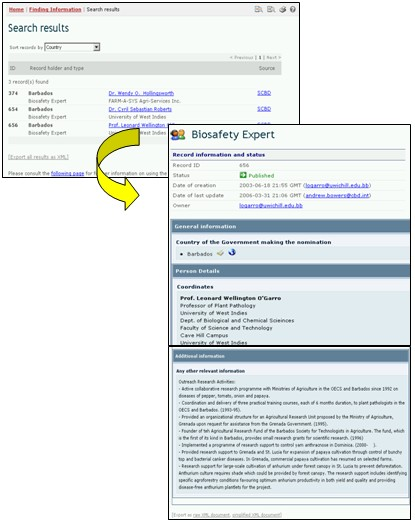

The user can export or download information from the BCH Central Portal to use in other applications by using the Export Results function. The exported information is provided in Extensible Markup Language (XML) format, a general-purpose specification for creating custom markup languages. Its primary purpose is to facilitate the sharing of data across different systems, particularly systems connected via the Internet.
The export facility is found at the bottom of each Search results page and each record.
The user can select the Export Results function to export either individual records or the results of a database search. These results can be imported into another program such as a word processor or spreadsheet.
